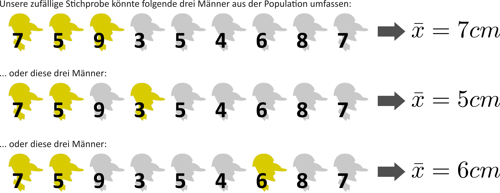
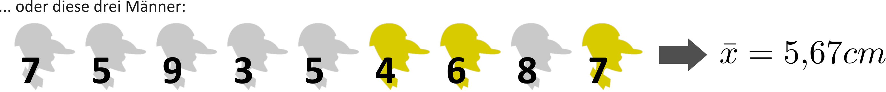
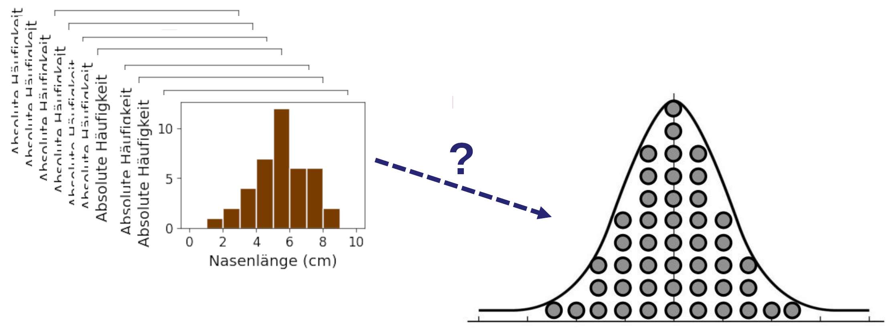
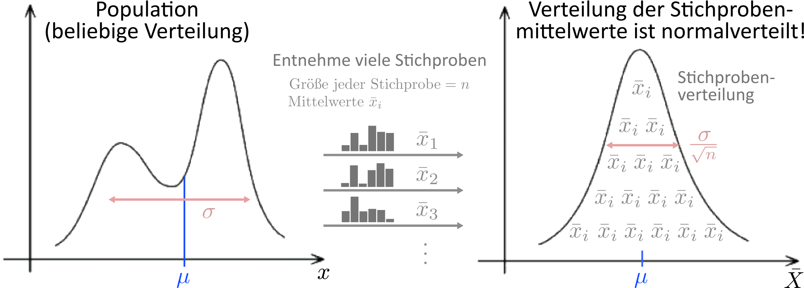

Verteilung
- Verteilungen kennen wir bereits aus der Vorlesung 04 zu Lage- und Streuungsmaßen.
- Wir unterscheiden zwischen empirischen Verteilungen, die etwa in der Form von Histogrammen dargestellt werden…
- … und theoretischen Verteilungen, die durch eine mathematische Funktion \(f(x)\) definiert sind und für jede Merkmalsausprägung \(x\) die Häufigkeit \(f(x)\) angeben:
Normalverteilung: \[
f(x) = \frac{1}{\sigma\sqrt{2\pi}}e^{-\frac{1}{2}\left(\frac{x-\mu}{\sigma}\right)^2}
\]
Stichprobenverteilung
Empirische und theoretische Verteilungen gibt es nicht nur für Merkmale \(X\), sondern auch für statistische Kennwerte \(\hat{\theta}\), die für das Merkmal \(X\) bestimmt wurden — zum Beispiel Mittelwert \(\bar{x}\).
Prinzip: wir nehmen nicht nur eine einzelne Studie an, sondern viele Studien \(i=1...k\), die jeweils Mittelwerte \(\bar{x}_i\) bestimmt haben. Die Mittelwerte \(\bar{x}_i\) folgen ebenfalls einer Verteilung — der Stichprobenverteilung. Dieses Prinzip gilt nicht nur für den Mittelwert, sondern für alle statistischen Kennwerte \(\hat{\theta}\) (Median, Varianz, Kovarianz, Korrelation, usw.).
Stichprobenverteilung
Empirische Stichprobenverteilung
- Führe ich dieselbe Studie mehrmals durch und notiere jeweils den statistischen Kennwert (z.B. Mittelwert), erhalte ich eine empirische Stichprobenverteilung.
- Dies ist die Idee der Metaanalyse, die eine Vielzahl empirischer Studien zusammenfasst und analysiert (⇒ Vorlesung 13).
Theoretische Stichprobenverteilung
- Ich habe nur eine Studie, aber überlege, was theoretisch passieren würde, wenn ich diese Studie immer wieder wiederholen würde.
- Die resultierende Verteilung ist die theoretische Stichprobenverteilung.
- Die theoretische Stichprobenverteilung erlaubt uns eine Einschätzung darüber, wie stabil unser Ergebnis bei einer (hypothetischen) Wiederholung der Studie sein würde.
- Dies ist der Ansatz der Inferenzstatistik.
Experiment zur Stichprobenverteilung: Würfeln
Stichprobenverteilung: Beispiel
Gedankenexperiment: Wir nehmen an, die Population besteht nur aus 9 Männern und wir kennen von allen Männern die Nasenlänge:
In diesem Gedankenexperiment kennen wir also den wahren Mittelwert der Population. Er beträgt \(\mu = 6cm\).
Nun betrachten wir eine Studie, in der 3 Männer untersucht werden. Wir ziehen also eine zufällige Stichprobe \(n=3\) aus der Population.
Stichprobenverteilung: Beispiel

Stichprobenverteilung: Beispiel

… und so weiter
- Jeder Mittelwert wäre eine Schätzung für den wahren Populationswert.
- Die gesammelten Mittelwerte all dieser hypothetischen Studien können nun ebenfalls in ein Histogramm eingetragen werden (in braun).
- Wie wir noch sehen werden, lässt sich die Verteilung des Histogramms auch auch mathematisch beschreiben und führt zur theoretischen Stichprobenverteilung (im Bild rechts schon einmal durch die schwarze Kurve angedeutet).
Stichprobenverteilung: Beispiel
Was lernen wir aus dieser Verteilung?
- Obwohl es nur einen wahren Mittelwert gibt, weichen die einzelnen Studienergebnisse mehr oder weniger davon ab. Die Studienergebnisse haben eine Bandbreite.
- Die Bandbreite gibt einen Anhaltspunkt für die Genauigkeit der Schätzung des Populationsmittelwertes, die mit einer einzelnen Stichprobe erzielt werden kann.
- Ein wichtiges Ziel der Inferenzstatistik ist, diese Bandbreite mit mathematischen Methoden abzuschätzen, so dass nicht wie im Gedankenexperiment tatsächlich viele Wiederholungen einer Studie notwendig sind.
Stichprobenverteilung
Übertragen wir nun das Gedankenexperiment auf die Realität:
- Population seien nun alle Männer in Deutschland.
- Sie haben eine einzelne Studie durchgeführt (also eine Stichprobe aus der Population gezogen).
Achtung: das Histogramm zeigt nun im ersten Schritt wieder die Verteilung der Daten in einer einzelnen Studie!
- Ihnen ist nun klar, dass das Ergebnis der Studie nur eines von vielen möglichen Ergebnissen ist.
- Beim Wiederholen derselben Studie würde also – rein zufallsbedingt – ein etwas anderes Ergebnis herauskommen.
Theoretische Stichprobenverteilung
Wie sieht die zu erwartende Stichprobenverteilung aus, wenn ich, anders als im Gedankenexperiment, nicht alle möglichen Stichproben betrachten kann?
Mit anderen Worten: kann man abschätzen, wie die Verteilung von Stichprobenkennwerten erwartbar aussehen würde, würden wir die Studie – rein hypothetisch – unendlich oft wiederholen? Die Antwort lautet JA und führt über die mathematischer Herleitung der theoretischen Stichprobenverteilung.

Theoretische Stichprobenverteilung
- Als erste Frage stellt sich: durch welche grundlegende mathematische Funktion lässt sich die theoretische Stichprobenverteilung beschreiben?
- Die Antwort auf diese Frage lässt sich aus dem zentralen Grenzwertsatz ableiten, demzufolge viele natürliche Merkmale normalverteilt sind, weil sie sich aus einer Summe von Zufallseffekten (Genetik, Umwelt, Erziehung, usw.) zusammensetzen.
- Die zentrale Erkenntnis ist nun, dass sich die gleiche Logik — Summe von Zufallseffekten — auf statistische Kennwerte \(\hat{\theta}\) wie den Mittelwert übertragen lässt!
- Häufig kann als Stichprobenverteilung daher die Normalverteilung angenommen werden.
Beispiel: statistischer Kennwert \(\hat{\theta}\) = Mittelwert \(\bar{x}\)
Nehmen wir \(j=1..k\) hypothetische Studien an, die jeweils einen Mittelwert \(\bar{x}^{(j)}\) berechnen. Jeder Mittelwert basiert auf der Summe (\(\Sigma\)) von zufällig gezogenen Daten (\(x_i^{(j)}\)) aus einer Stichprobe. Gemäß dem zentralen Grenzwertsatz erwarten wir daher im Grenzfall (d.h. Stichprobengröße gegen ∞), dass die Mittelwerte einer Normalverteilung folgen.
\[
\quad\bar{x}^{(j)} = \frac{1}{n}\sum x^{(j)}_i
\]
Theoretische Stichprobenverteilung
- Nochmals in anderen Worten: ziehen wir sehr viele Stichproben aus der Population, berechnen für jede Stichprobe einen statistischen Kennwert (in Bezug auf die betrachtete Merkmalsvariable), so sind diese Kennwerte häufig normalverteilt — und zwar unabhängig von der Verteilung der Merkmalsvariable \(X\) in der Population!

Theoretische Stichprobenverteilung
Zu beachten ist, dass der zentrale Grenzwertsatz streng genommen nur für den Grenzwert gilt, d.h. wenn die Stichprobengröße \(n\) sehr groß wird. Als Faustregel gilt für den Mittelwert etwa gilt, dass ab \(n=30\) die Stichprobenverteilung hinreichend genau durch die Normalverteilung beschrieben werden kann.
Bei anderen statistischen Kennwerten, v.a. solchen, die auf einen endlichen Bereich beschränkt sind (z.B. Korrelation −1 bis +1, relative Häufigkeiten 0 bis 1), gilt die Normalverteilungs-Näherung bei typischen Stichprobengrößen wie \(n=30\) nicht ohne Weiteres.
In diesem Fall werden andere — asymmetrische — Funktionen als die Normalverteilung für die Stichprobenverteilung angenommen (⇒ Vorlesung 12).
Theoretische Stichprobenverteilung
Die Form der theoretischen Stichprobenverteilung (SV) ist also geklärt (zumindest im Grenzfall \(n\rightarrow\infty\)): Normalverteilung.
\[
f(\theta) = \frac{1}{\sigma\sqrt{2\pi}}e^{-\frac{1}{2}\left(\frac{\theta-\mu}{\sigma}\right)^2}
\]
Dass eine Zufallsvariable wie hier \(\theta\) normalverteilt ist, wird häufig auch mit folgender Notation zum Ausdruck gebracht:
\[
\theta \sim \mathcal{N}(\mu_\text{SV},\,\sigma_\text{SV})
\]
(in Worten: wir nehmen an, dass potentielle Stichprobenkennwerte \(\theta\) einer Normalverteilung \(\mathcal{N}\) mit Mittelwert \(\mu_\text{SV}\) und Standardabweichung \(\sigma_\text{SV}\) folgen)
Zwei Informationen fehlen nun noch:
- Was ist der Mittelwert (\(\mu_\text{SV}\)) der theoretischen Stichprobenverteilung?
- Was ist die Streuung (\(\sigma_\text{SV}\)) der theoretischen Stichprobenverteilung?
Mittelwert der theoretischen Stichprobenverteilung
- Kann von einer Normalverteilung für die Form der Stichprobenverteilung ausgegangen werden, ist die beste Schätzung \(\hat{\mu}_\text{SV}\) für den Mittelwertsparameter \(\mu_\text{SV}\) der Stichprobenverteilung der statistische Kennwert selbst (z.B. \(\bar{x}, \hat{\sigma}\)).
Beispiel: statistischer Kennwert \(\hat{\theta}\) = Mittelwert \(\bar{x}\)
Ist der Mittelwert der betrachtete statistische Stichprobenkennwert so gilt:
\[
\hat{\mu}_\text{SV} = \bar{x}
\]
Die theoretische Stichprobenverteilung wird also in diesem Fall um den Stichprobenmittelwert \(\bar{x}\) herum konstruiert.
- Der Mittelwert \(\hat{\mu}_\text{SV}\) der Stichprobenverteilung ist identisch mit der besten Schätzung des statistischen Kennwertes \(\hat{\theta}\) für die Population.
Streuung der theoretischen Stichprobenverteilung
Bleibt die Frage nach dem Streuungsparameter \(\sigma_\text{SV}\) der theoretischen Stichprobenverteilung: woher wissen wir, wie die Ergebnisse von hypothetischen Stichproben streuen würden?
Gehen wir dazu zu unserem Gedankenexperiment zurück:
Was würde die Streuung der hypothetischen Einzelstichproben verkleinern?
Wenn die Stichproben größer ist als lediglich \(n=3\) Personen (z.B. \(n=6\))
⟶ damit lägen die Mittelwerte der Einzelstichproben idR näher am wahren Mittelwert!
Wenn die Population grundsätzlich eine geringere Streuung \(\sigma\) aufweist
⟶ damit würden auch die Mittelwerte der Einzelstichproben weniger streuen.
Der Streuungsparameter \(\sigma_\text{SV}\) der theoretischen Stichprobenverteilung muss also eine Funktion der Stichprobengröße \(n\) und der Streuung \(\sigma\) in der Population sein.
\[
\sigma_\text{SV} = f(n, \sigma)
\]
Streuung der theoretischen Stichprobenverteilung
- Kann für die Stichprobenverteilung eine Normalverteilung angenommen werden, so wird die Streuung \(\sigma_\text{SV}\) als Standardfehler (engl. standard error) oder \(se\) bezeichnet.
\[
\sigma_\text{SV} = se
\]
- Da wir in der Regel \(\sigma_\text{SV}\) bzw. \(se\) nicht kennen und als \(\hat{se}\) schätzen müssen heißt es in der Praxis:
\[
\hat{\sigma}_\text{SV} = \hat{se}
\]
- Der Standardfehler ist die Standardabweichung der normalverteilten Stichprobenverteilung um den Mittelwert \(\hat{\theta}\).
Beispiel: Standardfehler des Mittelwertes
Beispiel: statistischer Kennwert \(\hat{\theta}\) = Mittelwert \(\bar{x}\)
Beim statistischen Kennwert “Mittelwert” berechnet sich der Standardfehler als Standardabweichung der Population \(\sigma\) geteilt durch die Wurzel aus der Stichprobengröße \(n\) (“Wurzel-N-Gesetz”):
\[
\text{Standardfehler des Mittelwertes:}\qquad\hat{\sigma}_\text{SV} = \hat{se} = \frac{\hat{\sigma}}{\sqrt{n}}
\]
In der Regel kennen wir die wahre Standardabweichung \(\sigma\) der Population nicht und schätzen sie deshalb (wie gehabt) als \(\hat{\sigma}\) auf Basis der Stichprobe.
- Intuitiv sagt der Standardfehler des Mittelwertes aus, wie sicher wir uns bei der Bestimmung des Mittelwertes sein können
- Großer Standardfehler: Gemessener Mittelwert ist eher unsicher
- Kleiner Standardfehler: Gemessener Mittelwert ist eher sicher
Zwischenfazit
Die theoretische Stichprobenverteilung folgt einer Normalverteilung (falls n groß genug) mit einem Mittelwert, der dem statistischen Kennwert entspricht, und einer Standardabweichung, die sich aus der Populationsstreuung \(\sigma\) und der Stichprobengröße \(n\) berechnet (der sog. Standardfehler).
- Der Standardfehler gibt darüber Auskunft, wie verlässlich unsere Schätzung des statistischen Kennwertes ist.
- Wie wir noch sehen werden umfasst \(1 \hat{se}\) die mittleren 68% der möglichen Ergebnisse in der theoretischen Stichprobenverteilung.
Nehmen wir an, die Nasenlängen der Männer in unserer Studie weisen eine durchschnittliche Länge von \(6cm\) auf und einen Standardfehler (des Mittelwertes) von \(0{,}5cm\).
Wir können damit sagen, dass der Bereich
\[
\bar{x}\pm\hat{se} = 6\pm 0{,}5 = [5{,}5; 6{,}5]
\]
68% der Stichprobenverteilung umfasst.
In Vorlesung 12 werden wir noch feststellen, dass wir (leider) nicht schlussfolgern können, dass der wahre Populationsmittelwert \(\mu\) mit 68% Wahrscheinlichkeit in diesem Intervall liegt.
Interpretation des Standardfehlers
Wie kann man den Wert eines Standardfehlers interpretieren?
- Prinzipiell gilt: je kleiner, desto präziser ist die Kennwertschätzung auf Basis der Stichprobe.
- Allerdings ist der Standardfehler keine standardisierte Größe wie z.B. Cohen’s \(d\), sondern hängt von den gewählten Einheiten der Variable \(X\) ab.
- Interpretation ohne Kenntnis der Einheit/Messskala nicht möglich.
- Anhaltspunkt: Vergleich/Verhältnis des Standardfehlers zum Wertebereich Skala (z.B. Ratingskala 1-10) oder zur Standardabweichung in der Stichprobe:
Im Nasenlängen-Beispiel galt \(\bar{x}=6cm\) und \(\hat{se}=0{,}5cm\). Nehmen wir an, die Standardabweichung von Nasenlängen in der Stichprobe wurde zu \(5cm\) gemessen, also \(\hat{\sigma}=5cm\). In diesem Fall beträgt der Standardfehler — unser Maß für die Präzision der Mittelwertmessung — 10% der Streubreite des Merkmals in der Stichprobe. Dies entspricht einer recht guten/präzisen Schätzung des Mittelwertes.
(Als kleine Übung: wie hoch müsste in diesem Beispiel die Stichprobenzahl gewesen sein? (Antwort: \(n=100\))
Verwendung des Standardfehlers in der Praxis
- Im Text wird der Standardfehler des Mittelwertes oft in folgender Form angegeben: \(M = 3.2 \pm 0.6 \,\,(\text{SEM})\).
- Wichtig: es sollte prinzipiell immer angegeben werden, um was für ein Streuungsmaß es sich handelt (SEM ist hier die geläufige englische Abkürzung für standard error of the mean).
- In Abbildungen wird der Standardfehler ähnlich wie die Standardabweichung häufig in Form von Fehlerbalken dargestellt:
- Ist das Hauptinteresse ob sich Experimentalbedingungen in ihrem Mittelwert unterscheiden, ist der Standardfehler aussagekräftiger als die Varianz oder Standardabweichung
- Aus diesem Grund ist der Standardfehler des Mittelwertes das vielleicht häufigste Streuungsmaß in der Psychologie
- Das grundsätzliche Ziel der Inferenzstatistik ist es die Verallgemeinerbarkeit von Stichprobenkennwerten auf die Population zu untersuchen.
- Eine wichtige Frage ist dabei, wie präzise Schätzungen von Populationskennwerten auf Basis von Stichprobenkennwerten sind.
- Generelle Idee: Was würde passieren, wenn die Studie hypothetisch unendlich oft durchgeführt und jeweils der Kennwert bestimmt würde?
- Diese Idee wird durch die theoretische Stichprobenverteilung repräsentiert.
- Die Stichprobenverteilung von Kennwerten \(\hat{\theta}\) kann aufgrund des Zentralen Grenzwertsatzes häufig als normalverteilt angenommen werden.
- Der Mittelwert \(\mu_\text{SV}\) der normalverteilten Stichprobenverteilung ist der Kennwert \(\hat{\theta}\) selbst und ihre Standardabweichung \(\sigma_\text{SV}\) wird als Standardfehler \(se\) bezeichnet.
- Beispiel Kennwert \(\hat{\theta}\) = Mittelwert \(\bar{x}\): \(\quad\hat{\mu}_\text{SV}=\bar{x}\), \(\quad\hat{\sigma}_\text{SV}=\hat{se}=\frac{\hat{\sigma}}{\sqrt{n}}\).
Herleitung des Standardfehlers
- Der Standardfehler ist ein Maß für die Variabilität der Stichprobenmittelwerte \(\bar{x}\) — dies können wir zunächst über die Varianz zum Ausdruck bringen:
\[
se^2 = Var(\bar{x})
\]
- Wir wissen, dass \(\bar{x} = \frac{1}{n}\sum X_i\), also:
\[
se^2 = Var(\bar{x}) = Var\left(\frac{1}{n}\sum X_i\right)
\]
- Um das \(\frac{1}{n}\) aus der Varianz herausziehen zu können, versichern wir uns einer kleinen Rechenregel:
\[
Var(aX) = \frac{1}{n}\left(aX_i-a\bar{x}\right)^2 = \frac{a^2}{n}\left(X_i-\bar{x}\right)^2 = a^2Var(X)
\]
\[
se^2 = \frac{1}{n^2}Var\left(\sum X_i\right)
\]
Herleitung des Standardfehlers
\[
\text{Zwischenergebnis}\qquad se^2 = \frac{1}{n^2}Var\left(\sum X_i\right)
\]
- Die Summe in der Varianz stört noch. Glücklicherweise gilt, dass die Varianz der Summe von unabhängigen Zufallsvariablen \(X_i\) gleich der Summe der Varianzen ist, d.h.
\[
Var\left(\sum X_i\right)=\sum Var(X_i)
\]
\[
se^2 = \frac{1}{n^2}\sum Var(X_i) = \frac{1}{n^2}\big(n\cdot Var(X_i)\big) = \frac{1}{n}Var(X_i)
\]
- Nun sind wir fast am Ziel. Da die Varianz der \(X_i\) nichts anderes als die quadrierte Standardabweichung \(\sigma^2\) ist, gilt:
\[
se^2 = \frac{\sigma^2}{n} \qquad \text{bzw.} \qquad se = \frac{\sigma}{\sqrt{n}}
\]
Übersicht Standardfehler
| Mittelwert |
\(\hat{se}(\bar{x}) = \frac{\hat{\sigma}}{\sqrt{n}}\) |
|
| Median |
\(\hat{se}(\tilde{x}) = \sqrt{\frac{\pi}{2}}\frac{\hat{\sigma}}{\sqrt{n}}\) |
Annahme: Normalverteilung von \(X\) |
| Varianz |
\(\hat{se}(s^2) = \sqrt{\frac{2}{n-1}}\hat{\sigma}^2\) |
Annahme: Normalverteilung von \(X\) |
| Standardabweichung |
\(\hat{se}(s) = \frac{\hat{\sigma}}{\sqrt{2(n-1)}}\) |
Näherung; Annahme: Normalverteilung von \(X\) |
| Korrelation |
\(\hat{se}(r) = \sqrt{\frac{1-r^2}{n-2}}\) |
Näherung; Hinweis: laut neuerer Forschung ist \(\hat{se}(r) = \sqrt{\frac{1-r^2}{n-3}}\) sogar ein noch besserer Schätzer |
| Cohen’s d (abhängige Messungen) |
\(\hat{se}(d) = \sqrt{\frac{1}{n}+\frac{d^2}{2n}}\) |
Näherung |
| Cohen’s d (unabhängige Messungen) |
\(\hat{se}(d) = \sqrt{\frac{n_1+n_2}{n_1n_2}+\frac{d^2}{2(n_1+n_2)}}\) |
Näherung; Quelle |
Nützliches Paper